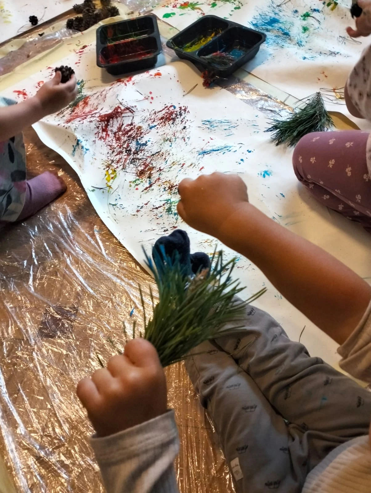
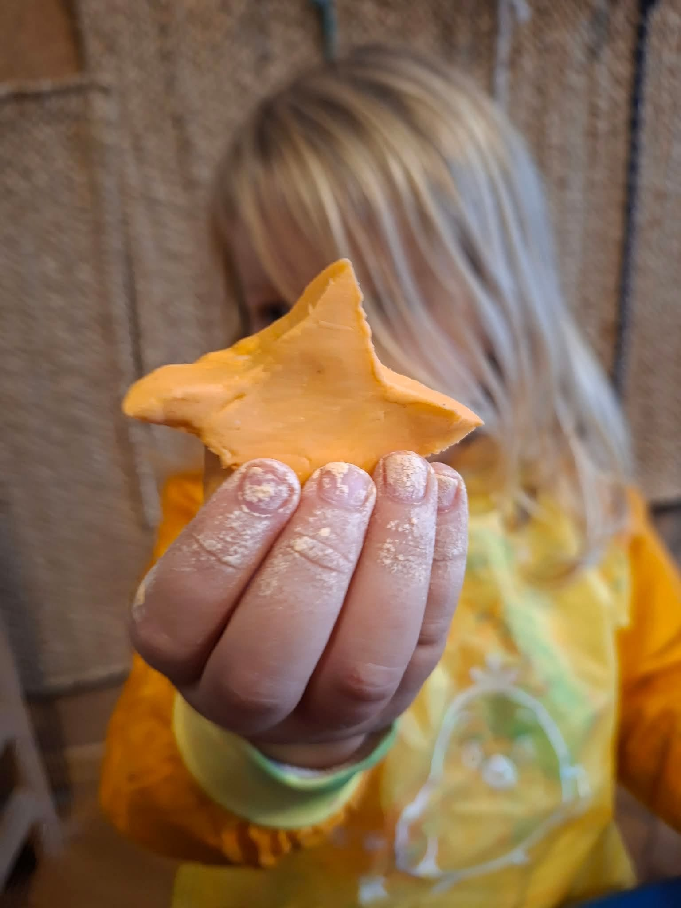
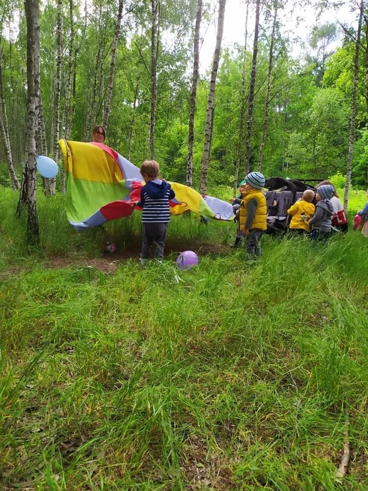

Żłobek Pod Chmurką – kameralny żłobek na Ursynowie
Dziecko ma prawo być sobą. Tworzymy bezpieczne miejsce, w którym dzieci rozwijają się przez zabawę, bliskość i kontakt z naturą.
Kadra z przygotowaniem pedagogicznym.
ul. Kanarkowa 8, Warszawa – Zielony Ursynów, Grabów.
Zadzwoń: 530 119 251Z życia żłobka
Zobacz, jak spędzamy czas – autentyczne chwile radości naszych podopiecznych na Ursynowie.

Zobacz, jak spędzamy czas w naszym żłobku

